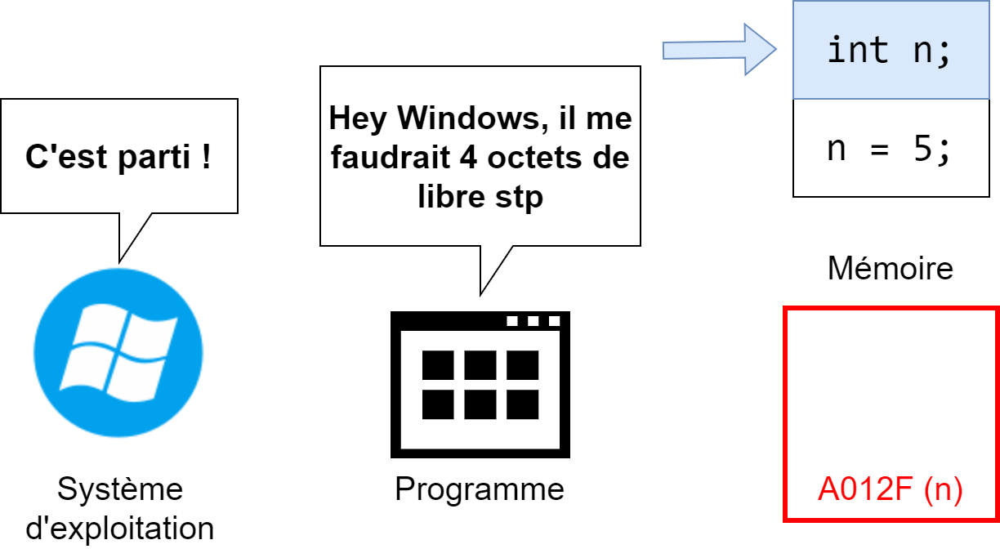
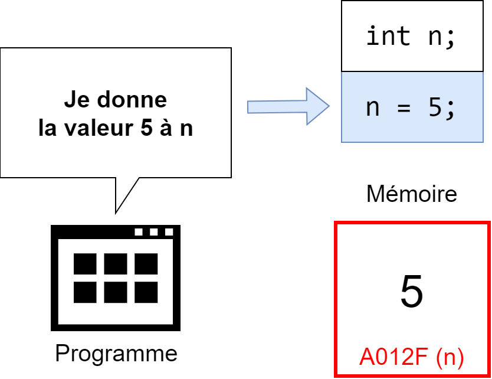
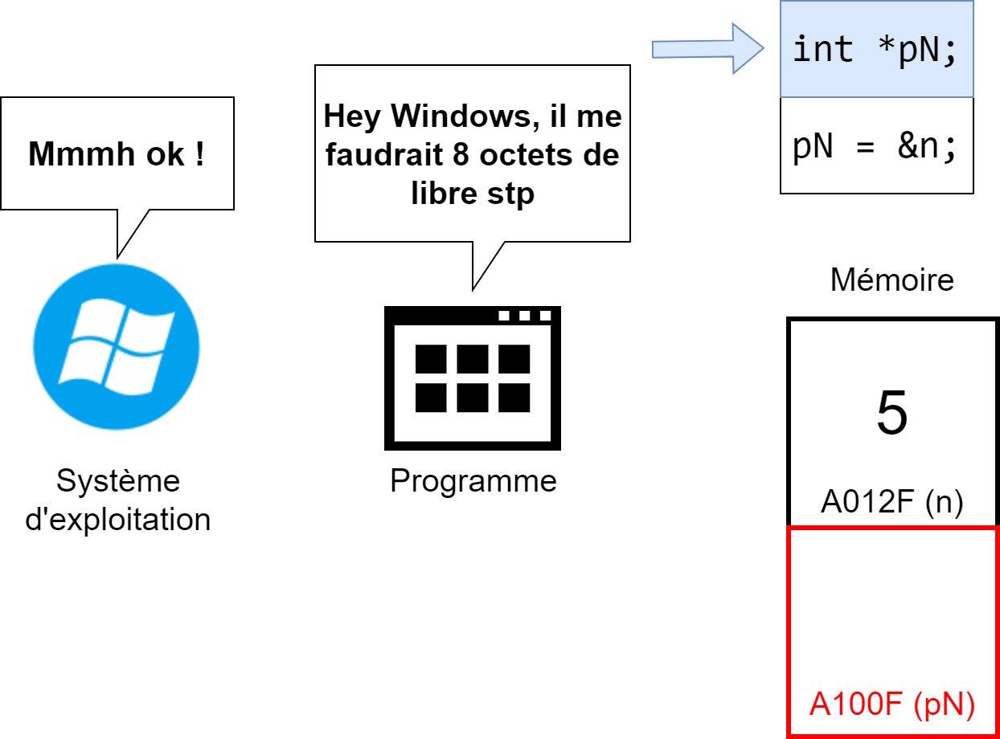
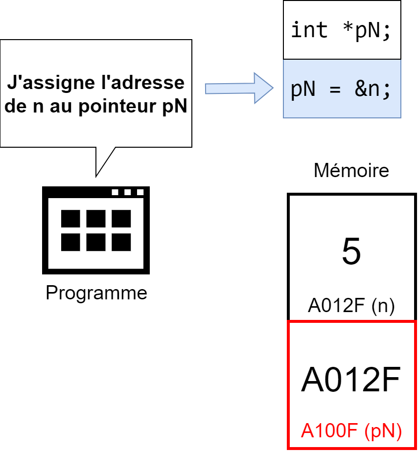
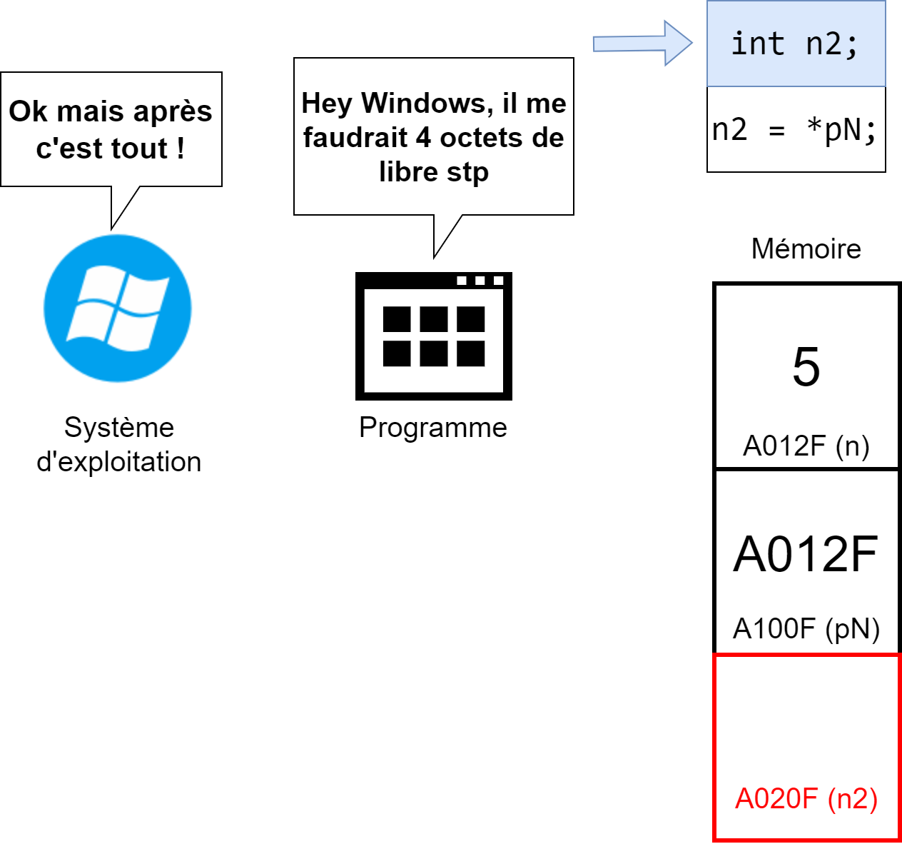
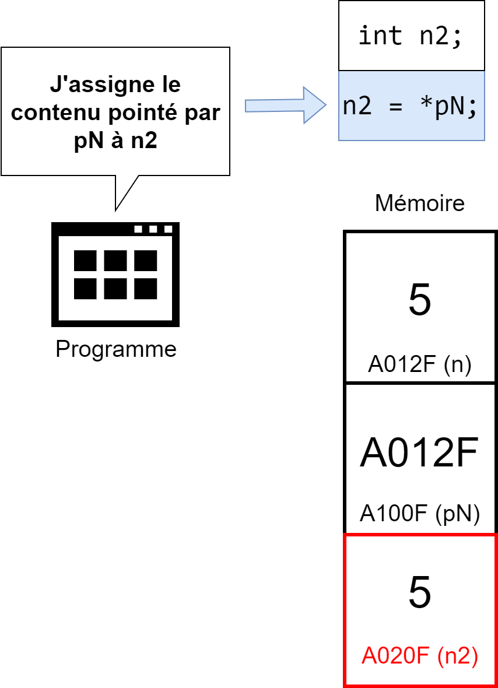
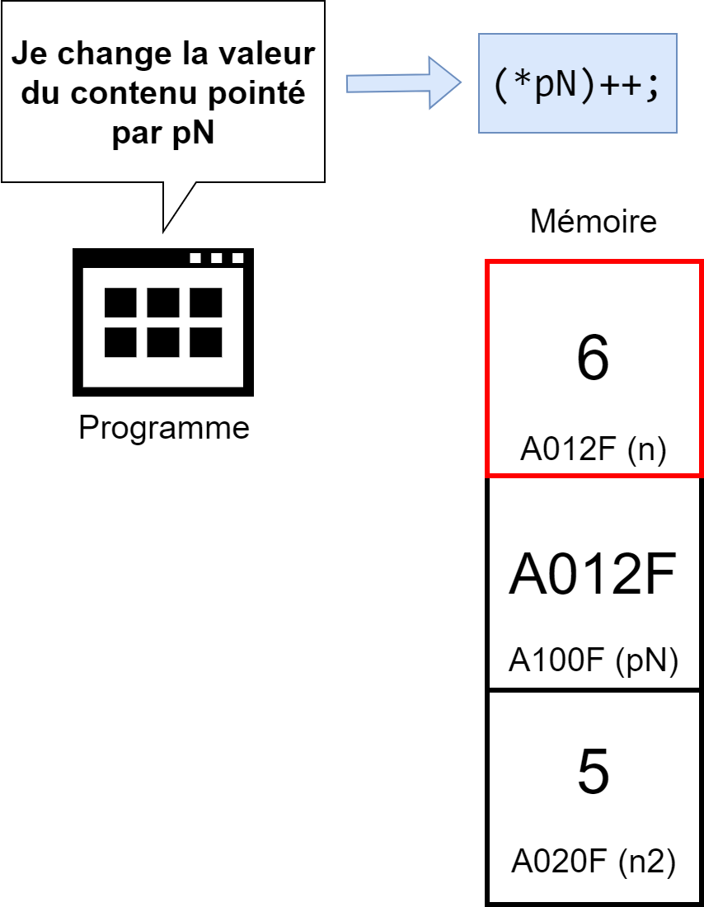
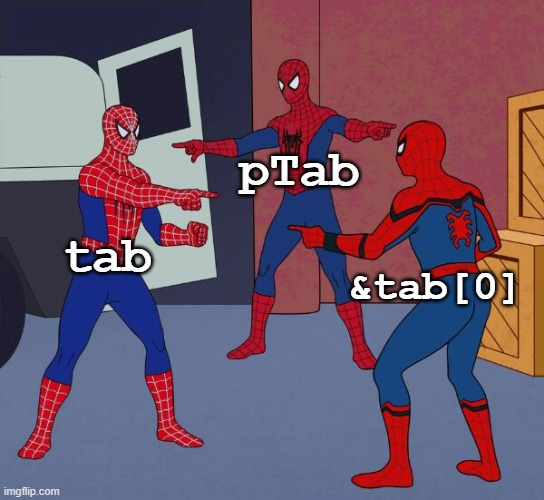
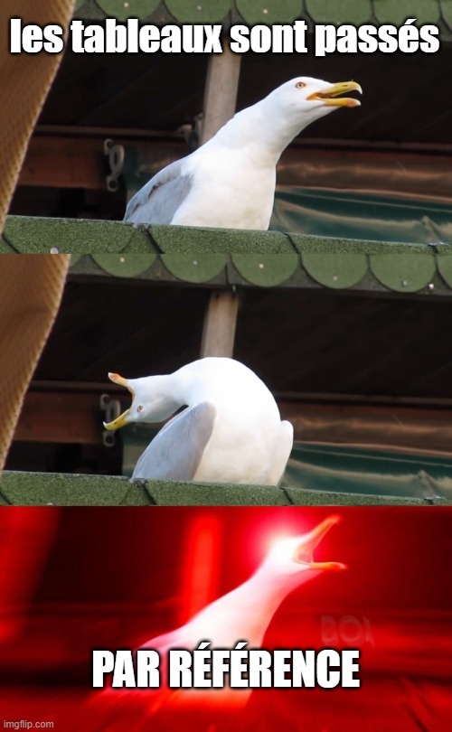
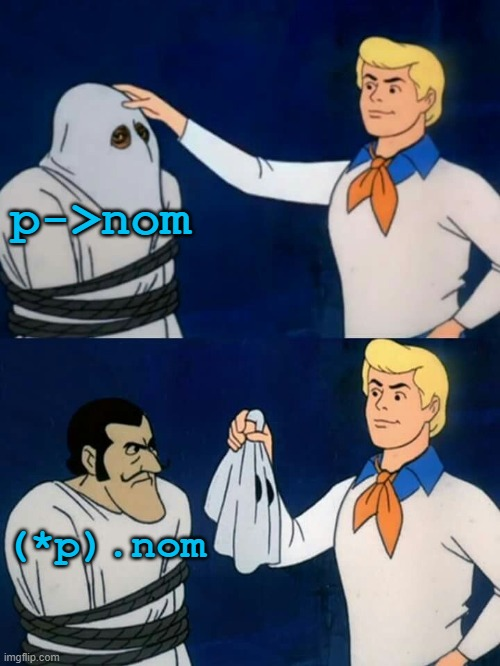

class: center, middle # Programmation procédurale : # les pointeurs <img height="200px" src="img/logo.png"> --- ## On parle de quoi ? 1. <a href="UAA11-ch11.html#3">Introduction aux pointeurs</a> 2. <a href="UAA11-ch11.html#11">Déclaration</a> 3. <a href="UAA11-ch11.html#12">Assignation</a> 4. <a href="UAA11-ch11.html#14">Utilisation</a> 5. <a href="UAA11-ch11.html#20">Pointeurs et fonctions</a> 6. <a href="UAA11-ch11.html#25">Pointeurs et tableaux</a> 7. <a href="UAA11-ch11.html#39">Pointeurs, fonctions et tableaux</a> 8. <a href="UAA11-ch11.html#43">Pointeurs et structures</a> 9. <a href="UAA11-ch11.html#46">Valeur particulière d'un pointeur</a> 10. <a href="UAA11-ch11.html#47">Affichage d'un pointeur / d'une adresse</a> --- ## Introduction aux pointeurs <div style="text-align: center;">  </div> --- ## Introduction aux pointeurs <div style="text-align: center;">  </div> --- ## Introduction aux pointeurs <div style="text-align: center;">  </div> --- ## Introduction aux pointeurs <div style="text-align: center;">  </div> --- ## Introduction aux pointeurs <div style="text-align: center;">  </div> --- ## Introduction aux pointeurs <div style="text-align: center;">  </div> --- ## Introduction aux pointeurs <div style="text-align: center;">  </div> --- ## Introduction aux pointeurs Un **pointeur** est une variable qui contient l'adresse d'une autre variable. On dit alors que le pointeur "pointe" vers cette autre variable. Un pointeur peut pointer vers une variable de n'importe quel type (entier, réel, tableau, etc.). <div style="text-align: center;"> </div> --- ## Déclaration Pour **déclarer un pointeur** il faut : * spécifier le même type que la variable pointée * ajouter le symbole `*` devant le nom de la variable pointeur * (convention) ajouter la lettre "p" devant le nom de la variable pointeur Exemples : ```c // Un pointeur pointant vers un entier int *pN; // Un pointeur pointant vers un réel float *pF; // Un pointeur pointant vers la 4ième case // d'un tableau d'entiers int *pTab4;; // Un pointeur pointant vers // un tableau d'entiers int *pTab; ``` --- ## Assignation Un fois un pointeur déclaré, on peut lui assigner une valeur. <span style="color:red;font-weight: bold;">Attention ! Un pointeur contient toujours l'adresse d'une autre variable.</span> Pour **accéder à l'adresse d'une variable**, il faut utiliser l'opérateur d'adressage `&`. --- ## Assignation Exemples : ```c // Un pointeur pointant vers un entier int n = 5; int *pN = &n; // Un pointeur pointant vers un réel float f = 5; float *pF = &f; // Un pointeur pointant vers la 4ième case // d'un tableau d'entiers int tab[] = {1,2,3,4,5}; int *pTab4 = &tab[3]; // Un pointeur pointant vers // un tableau d'entiers int tab[] = {1,2,3,4,5}; int *pTab = tab; // pourquoi ne faut-il pas utiliser & ? ``` --- ## Utilisation Pour **accéder au contenu pointé par un pointeur**, il suffit d'ajouter le symbole `*`. Comment changer la valeur de n en utilisant le pointeur ? ```c int n = 5; int *pN = &n; ``` --- ## Utilisation Pour **accéder au contenu pointé par un pointeur**, il suffit d'ajouter le symbole `*`. Comment changer la valeur de n en utilisant le pointeur ? ```c int n = 5; int *pN = &n; *pN = 6 ``` --- ## Utilisation Comment changer la 4ième case en utilisant le pointeur ? ```c int tab[] = {1,2,3,4,5}; int *pTab4 = &tab[3]; ``` --- ## Utilisation Comment changer la 4ième case en utilisant le pointeur ? ```c int tab[] = {1,2,3,4,5}; int *pTab4 = &tab[3]; *pTab4 = 6 ``` --- ## Utilisation Comment changer la 4ième case en utilisant le pointeur ? ```c int tab[] = {1,2,3,4,5}; int *pTab = tab; ``` --- ## Utilisation Comment changer la 4ième case en utilisant le pointeur ? ```c int tab[] = {1,2,3,4,5}; int *pTab = tab; pTab[3] = 6; ``` --- ## Pointeurs et fonctions Jusqu'à présent, les fonctions ne pouvaient renvoyer qu'une seule valeur. Ainsi, il était impossible d'implémenter ce genre de fonction : ``` o────────────────o ↓ tab │ CalculerMinMax │ o────────────────o ↓ min,max ``` Comment pourrait-on procéder pour implementer cette fonction en utilisant les pointeurs ? --- ## Pointeurs et fonctions En utilisant le passage par copie, il n'est pas possible de retourner plus d'une valeur ```c #define TAILLE_MAX 5 void main(void){ int max; int min; int tab[TAILLE_MAX] = {4,9,7,4,2}; calculerMinMax(tab,min,max); printf("Le max est : %d\nLe min est : %d", max,min); } ``` <span style="color:red">Rappel : les entiers sont passés par <b>copie</b></span> --- ## Pointeurs et fonctions En utilisant le passage par copie, il n'est pas possible de retourner plus d'une valeur ```c void calculerMinMax(int tab[], int min, int max){ int maxTemp = -1; int minTemp = 9999999; for(int i = 0; i < TAILLE_MAX; i++){ if(tab[i] > maxTemp) maxTemp = tab[i]; if(tab[i] < minTemp) minTemp = tab[i]; } // min et max sont locales à calculerMinMax // (copies de min et max de la fonction main) // et ne peuvent donc pas être passées à // la fonction main min = minTemp; max = maxTemp; } ``` --- ## Pointeurs et fonctions Lorsque l'on souhaite qu'une fonction retourne plusieurs valeur, il faut utiliser des pointeurs. ```c #define TAILLE_MAX 5 void main(void){ int max; int min; int tab[TAILLE_MAX] = {4,9,7,4,2}; // on "force" le passage par référence // en utilisant le symbole & calculerMinMax(tab,&min,&max); printf("Le max est : %d\nLe min est : %d", max,min); } ``` --- ## Pointeurs et fonctions Lorsque l'on souhaite qu'une fonction retourne plusieurs valeur, il faut utiliser des pointeurs. ```c // calculerMinMax ne reçoit pas 2 entiers // mais bien 2 pointeurs qui pointent chacun // vers un entier void calculerMinMax(int tab[], int *pMin, int *pMax){ int max = -1; int min = 9999999; for(int i = 0; i < TAILLE_MAX; i++){ if(tab[i] > max) max = tab[i]; if(tab[i] < min) min = tab[i]; } // le contenu de la variable pointée par pMin = min *pMin = min; // le contenu de la variable pointée par pMax = max *pMax = max; } ``` --- ## Pointeurs et tableaux Quel est la représentation en mémoire après l'exécution de ce bout de code ? ```c int tab[] = {10, 20, 30, 40, 50}; ``` -- <div style="text-align: center;"> </div> → <span style="color:red">tab est en réalité un pointeur qui pointe vers la première case du tableau</span> --- ## Pointeurs et tableaux Quel est la représentation en mémoire après l'exécution de ce bout de code ? ```c int tab[] = {10, 20, 30, 40, 50}; int a = tab[0]; int b = *tab; ``` -- <div style="text-align: center;"> </div> --- ## Pointeurs et tableaux Quel est la représentation en mémoire après l'exécution de ce bout de code ? ```c int tab[] = {10, 20, 30, 40, 50}; int *pTab = tab; ``` -- <div style="text-align: center;"> </div> --- ## Pointeurs et tableaux Quel est la représentation en mémoire après l'exécution de ce bout de code ? ```c int tab[] = {10, 20, 30, 40, 50}; int *pTab = &tab[0]; ``` -- <div style="text-align: center;"> </div> --- ## Pointeurs et tableaux Une variable utilisée pour déclarer un tableau est en réalité un pointeur qui pointe vers la première case du tableau... <div style="text-align: center;">  </div> --- ## Pointeurs et tableaux Quel est la représentation en mémoire après l'exécution de ce bout de code ? ```c int tab[] = {10, 20, 30, 40, 50}; int *pTab = tab; pTab++; ``` -- <div style="text-align: center;"> </div> --- ## Pointeurs et tableaux Quel est la représentation en mémoire après l'exécution de ce bout de code ? ```c int tab[] = {10, 20, 30, 40, 50}; int *pTab = tab; pTab = pTab + 2; ``` -- <div style="text-align: center;"> </div> --- ## Pointeurs et tableaux <span style="color:red">Une variable utilisée pour déclarer un tableau est **constante** (non modifiable) !</span> ```c int tab[] = {10, 20, 30, 40, 50}; tab++; // erreur !! ``` </br> <img height="100px" style="float: left; margin-right: 10px;" src="img/thumb_green.png"> ```c int tab[] = {10, 20, 30, 40, 50}; int *pTab = tab; pTab++; // ok !! ``` --- ## Pointeurs, fonctions et tableaux Jusqu'à présent, les tableaux étaient passés de cette manière aux fonctions : ```c void main(void){ int notes[] = {8,7,4,9,4} float moyenne = calculerMoyenne(notes, 5); } float calculerMoyenne(int notes[], int taille){ // calcul } ``` Le prototype de `calculerMoyenne` peut être écrit autrement... --- ## Pointeurs, fonctions et tableaux ```c float calculerMoyenne(int *pNotes, int taille){ // calcul } ``` Quel sera l'appel dans la fonction `main` ? ```c void main(void){ int notes[] = {8,7,4,9,4} // ceci ? float moyenne = calculerMoyenne(notes, 5); // ou ceci ? float moyenne = calculerMoyenne(& notes, 5); } ``` --- ## Pointeurs, fonctions et tableaux Quel sera l'appel dans la fonction `main` ? <div style="text-align: center;">  </div> --- ## Pointeurs, fonctions et tableaux ```c void main(void){ int notes[] = {8,7,4,9,4} float moyenne = calculerMoyenne(notes, 5); } float calculerMoyenne(int *pNotes, int taille){ // calcul } ``` --- ## Pointeurs et structures Un pointeur peut pointer vers une structure. ```c #define TAILLE_NOM_PRENOM 100 struct personne { char nomPrenom[TAILLE_NOM_PRENOM]; int dateNaissance; }; typedef struct personne Personne; void main(void) { Personne personne; Personne* pPersonne = &personne; } ``` --- ## Pointeurs et structures L'accès aux contenu pointé peut se faire de deux manières : ### En utilisant le symbole `*` ```c void main(void) { Personne personne; Personne* pPersonne = &personne; printf("%s", (*pPersonne).nomPrenom); } ``` ### En utilisant le symbole `->` ```c void main(void) { Personne personne; Personne* pPersonne = &personne; printf("%s", pPersonne->nomPrenom); } ``` --- ## Pointeurs et structures <div style="text-align: center;">  </div> --- ## Valeur particulière d'un pointeur "Un pointeur contient toujours l'adresse d'une autre variable." Sauf... Quand le pointeur ne pointe vers rien du tout ! ```c FILE *pFichier; fopen_s(&pFichier, "C:\Lakers.dat","rb"); if(pFichier == NULL) printf("Fichier introuvable !\n"); ``` --- ## Affichage d'un pointeur / d'une adresse Il peut être utile de connaitre l'adresse pointée par un pointeur. Pour imprimer une adresse, on utilise `%x` dans la fonction `printf`. Exemple : ```c int a = 3; int* pA = &a; printf("a contient %d\n", a); printf("a se trouve a l'adresse %x\n", &a); printf("pA pointe vers (contient) %x\n", pA); printf("pA se trouve a l'adresse %x\n", &pA); ``` Affichage : <div class="remark-code" style="color: #444; background-color: #F0F0F0;"> a contient 3 </br> a se trouve a l'adresse 45b3fab4 </br> pA pointe vers (contient) 45b3fab4 </br> pA se trouve a l'adresse 45b3fad8 </div>